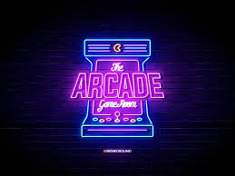

Hisoka Morow (ヒソカ=モロウ, Hisoka Morōu) is a magician and serial killer who combines his magic tricks with violence, and delights in battling those he considers strong to the point of sexual arousal. He is deceitful, playful, and narcissistic by nature; acting only in his own self-interest. In the manga, his sentences typically end with a suit symbol. Hisoka takes an interest in Gon and his friends after encountering them during the Hunter Exam, letting them live so that they grow into more worthy opponents. Although he is initially positioned as an antagonist due to his affinity towards murder, he later acts as a comrade to Gon when it suits his own interests. Hisoka is revealed to be member number four of the Phantom Troupe, although he only joined in order to get a chance to fight their leader, Chrollo Lucilfer. He leaves the group when Chrollo's Nen is sealed by Kurapika and sets out to find a way to break the seal. Having been successful in this task, Hisoka dies after fighting Chrollo in Heavens Arena, but revives himself, and goes on a killing rampage against the Phantom Troupe.Hisoka is currently believed to be on board the Black Whale, where he is being hunted by the Phantom Troupe and the Xi-Yu and Cha-R mafia families.
Hisoka's Nen type is Transmutation, allowing him to change the type or properties of his aura. He most often uses Elastic Love - Bungee Gum (伸縮自在の愛バンジーガム, Banjī Gamu), which gives his aura the properties of both rubber and gum. He also uses Flimsy Lies - Texture Surprise (薄っぺらな嘘ドッキリテクスチャー, Dokkiri Tekusuchā), which allows him to reproduce the texture of his choice on any flat surface; such as making a handkerchief appear to be skin. Hisoka is a popular character with fans, coming in fourth and fifth place in the series' first two popularity polls. (Wikipedia)